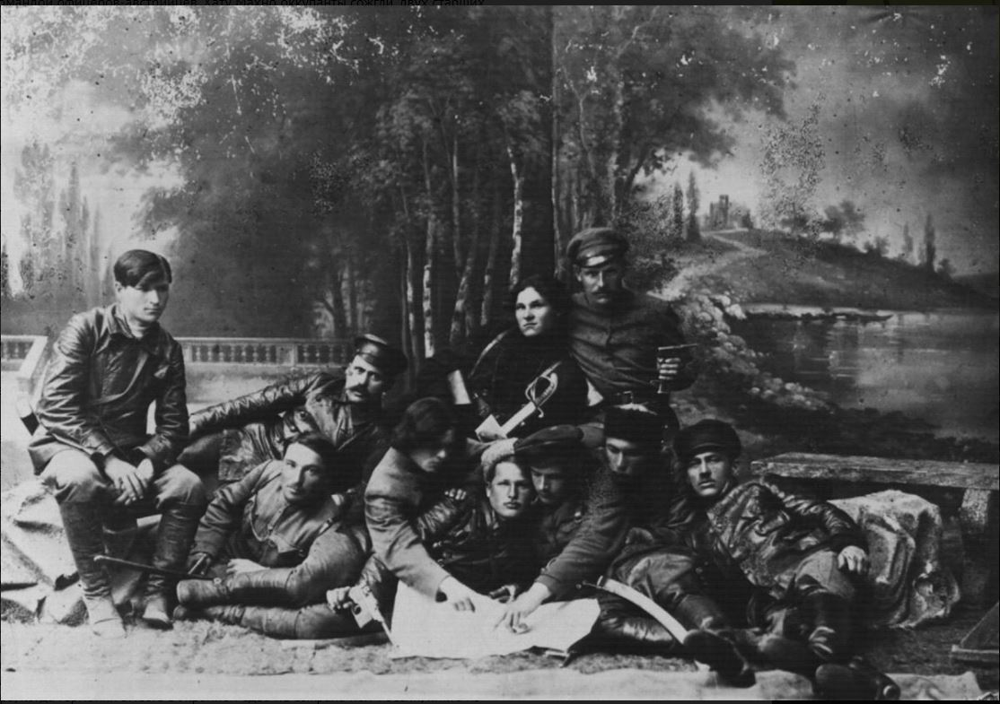

Les makhnovistes ne voulaient pas remplacer un gouvernement par un autre. Leur principe : les travailleuses et travailleurs s'organisent eux-mêmes, village par village, usine par usine, et se fédèrent librement. Ils parlaient de « soviets libres » : des conseils de travailleurs, sans parti qui les dirige d'en haut.
Les congrès régionaux
Le pouvoir de décision appartient aux congrès régionaux de paysans, d'ouvriers et d'insurgés. Chaque village, chaque entreprise, chaque unité de l'armée y envoie sa délégation, mandatée par une assemblée. Les premiers se tiennent en janvier, février et avril 1919 ; un grand congrès se réunit à Alexandrovsk à l'automne 1919.
- Le congrès discute de la terre, du ravitaillement, des écoles, de la défense de la région.
- Il élit un Conseil militaire révolutionnaire, chargé d'appliquer ses décisions entre deux congrès. Ce conseil n'a pas de pouvoir propre : il rend des comptes au congrès suivant.
- Les partis peuvent publier leurs journaux et défendre leurs idées, mais pas installer d'autorité au-dessus des congrès : pas de « comités révolutionnaires » nommés d'en haut.
La terre et les communes libres
Les terres prises aux propriétaires sont partagées entre celles et ceux qui les travaillent, sans employer personne. Autour de Houliaïpole, des familles volontaires fondent quelques communes agricoles sur d'anciens domaines : on y travaille et on y mange en commun, avec une assemblée qui répartit les tâches. Archinov rapporte que l'une d'elles avait pris le nom de Rosa Luxemburg. Personne n'est forcé d'y entrer : les paysans qui préfèrent cultiver seuls gardent leur lopin.
Avec les villes, les makhnovistes cherchent à organiser des échanges directs : du blé contre des tissus, des outils, du sel. C'est l'inverse de la politique bolchevique des réquisitions, où des détachements armés venaient saisir les récoltes.
L'armée insurrectionnelle

L'Armée révolutionnaire insurrectionnelle d'Ukraine, dite « makhnoviste », a compté selon les moments quelques milliers à plusieurs dizaines de milliers de combattantes et combattants. Ses règles tranchaient avec les armées de l'époque :
- Volontariat : on rejoint l'armée par choix ; c'est le congrès, et non un état-major, qui appelle à la mobilisation.
- Commandants élus par leurs unités, et révocables.
- Discipline établie par des règlements discutés et votés ; les fautes graves contre la population (pillage, violences) sont durement punies.
- Mobilité : cavalerie et tatchankas, des charrettes légères tirées par des chevaux et armées d'une mitrailleuse, capables de parcourir de longues distances en une journée.
- Appui des villages : les paysans nourrissent, cachent et renseignent les insurgés, qui peuvent se disperser et se reformer.
Journaux, écoles et anarchistes de toute la Russie
Des anarchistes venus de Russie et d'Ukraine, notamment de la confédération Nabat (« le Tocsin »), rejoignent le mouvement. Voline anime à partir de 1919 la section culturelle et éducative : journaux comme Le Chemin de la liberté, tracts, conférences, troupes de théâtre. Des écoles sont ouvertes sur le modèle de l'école libre de Francisco Ferrer, gérées par les parents et le corps enseignant.
Contre l'antisémitisme
L'Ukraine de la guerre civile est ravagée par les pogroms, commis surtout par les Blancs et par des bandes nationalistes. Les makhnovistes comptent des Juives et des Juifs dans leurs rangs et à des postes de responsabilité, et des villages juifs dans leur région. Le mouvement punit de mort les pillages et les violences antisémites commis par ses propres combattants. En juillet 1919, les makhnovistes exécutent l'ataman Grigoriev, chef de bande responsable de pogroms meurtriers. Les accusations d'antisémitisme lancées plus tard contre Makhno, notamment par la propagande soviétique, ont été démenties par de nombreux témoins.
À retenir
- Congrès souverain, conseil qui exécute, délégations révocables : la fédération de bas en haut.
- La terre à celles et ceux qui la travaillent, des communes libres pour qui le veut.
- Une armée de volontaires au service de la région, et non l'inverse.
- Suite : la critique libertaire des bolcheviks.
Sources et pour aller plus loin
Lire
- Nestor Makhno, le cosaque libertaire, Alexandre Skirda, Éditions de Paris, 1999.Les congrès, les communes et l'armée insurrectionnelle en détail.
- Histoire du mouvement makhnoviste, Piotr Archinov.Les résolutions des congrès et la vie dans la région libre.
- Anarchie et organisationNotre fiche : le débat sur la Plateforme écrite par Makhno et Archinov en exil.
Sur le web
- La Plateforme d'organisation (1926)Ce que Makhno et ses camarades ont tiré de leur expérience (Bibliothèque anarchiste).
- VolineL'anarchiste chargé de la culture et de l'éducation dans le mouvement.
Dossier rédigé par Mamie Commune à partir de travaux d'historiennes et d'historiens et de textes des mouvements concernés. Libre de reproduction.